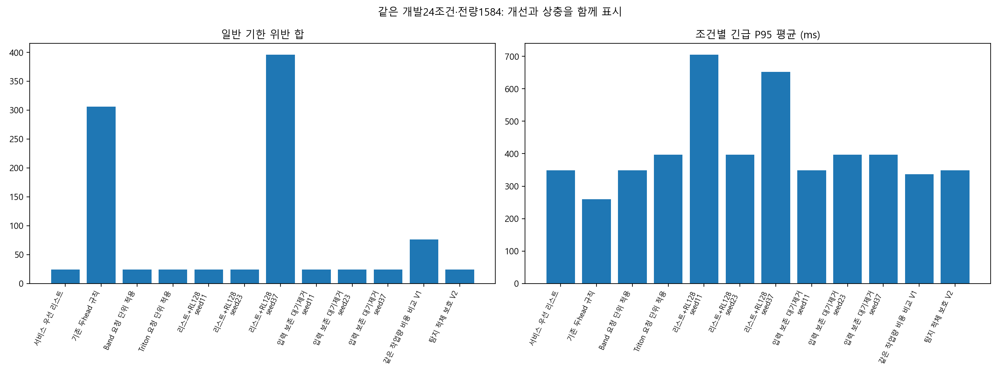
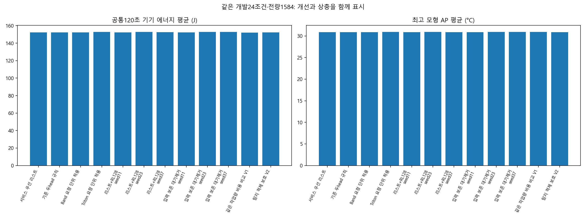

120환경·실행실패0·7920/7920완료·학습/기기0. 모두 개발 진단이며 새 독립 확인이 아니다.
탐지 적체 보호 V2는 서비스와 에너지를 보존했지만 Band/L0 대비 AP악화9조건이 남아 미채택이다. 모형 결과를 제품 전체·실물 표면온도 개선으로 해석하지 않는다.


필터
| 정책 | 학습seed | 조건 | 부하 | 문맥 | 일반위반 | 긴급P95 ms | J120 | 최고AP °C |
|---|---|---|---|---|---|---|---|---|
| 서비스 우선 리스트 | None | 0 | low | mean | 0 | 156.180 | 142.123 | 30.174 |
| 서비스 우선 리스트 | None | 1 | low | short_context | 0 | 156.180 | 142.114 | 30.173 |
| 서비스 우선 리스트 | None | 2 | low | long_context | 0 | 156.180 | 142.132 | 30.174 |
| 서비스 우선 리스트 | None | 3 | queue | mean | 4 | 398.063 | 141.994 | 30.422 |
| 서비스 우선 리스트 | None | 4 | queue | short_context | 4 | 382.894 | 141.980 | 30.419 |
| 서비스 우선 리스트 | None | 5 | queue | long_context | 4 | 413.233 | 142.007 | 30.426 |
| 서비스 우선 리스트 | None | 6 | burst | mean | 1 | 578.633 | 141.864 | 30.473 |
| 서비스 우선 리스트 | None | 7 | burst | short_context | 1 | 555.740 | 141.847 | 30.470 |
| 서비스 우선 리스트 | None | 8 | burst | long_context | 1 | 601.526 | 141.881 | 30.477 |
| 서비스 우선 리스트 | None | 9 | sustained | mean | 0 | 294.055 | 183.309 | 32.412 |
| 서비스 우선 리스트 | None | 10 | sustained | short_context | 0 | 286.608 | 183.148 | 32.395 |
| 서비스 우선 리스트 | None | 11 | sustained | long_context | 0 | 301.501 | 183.468 | 32.428 |
| 서비스 우선 리스트 | None | 12 | low | mean | 0 | 156.180 | 142.123 | 30.248 |
| 서비스 우선 리스트 | None | 13 | low | short_context | 0 | 156.180 | 142.114 | 30.247 |
| 서비스 우선 리스트 | None | 14 | low | long_context | 0 | 156.180 | 142.132 | 30.249 |
| 서비스 우선 리스트 | None | 15 | queue | mean | 2 | 398.652 | 141.864 | 30.477 |
| 서비스 우선 리스트 | None | 16 | queue | short_context | 2 | 383.483 | 141.847 | 30.473 |
| 서비스 우선 리스트 | None | 17 | queue | long_context | 2 | 413.822 | 141.881 | 30.481 |
| 서비스 우선 리스트 | None | 18 | burst | mean | 1 | 518.107 | 141.864 | 30.480 |
| 서비스 우선 리스트 | None | 19 | burst | short_context | 1 | 502.938 | 141.847 | 30.476 |
| 서비스 우선 리스트 | None | 20 | burst | long_context | 1 | 533.277 | 141.881 | 30.483 |
| 서비스 우선 리스트 | None | 21 | sustained | mean | 0 | 294.055 | 183.331 | 32.330 |
| 서비스 우선 리스트 | None | 22 | sustained | short_context | 0 | 286.608 | 183.138 | 32.315 |
| 서비스 우선 리스트 | None | 23 | sustained | long_context | 0 | 301.501 | 183.523 | 32.346 |
| 기존 두head 규칙 | None | 0 | low | mean | 0 | 156.180 | 142.123 | 30.158 |
| 기존 두head 규칙 | None | 1 | low | short_context | 0 | 156.180 | 142.114 | 30.158 |
| 기존 두head 규칙 | None | 2 | low | long_context | 0 | 156.180 | 142.132 | 30.159 |
| 기존 두head 규칙 | None | 3 | queue | mean | 10 | 294.055 | 142.107 | 30.375 |
| 기존 두head 규칙 | None | 4 | queue | short_context | 10 | 286.608 | 142.095 | 30.375 |
| 기존 두head 규칙 | None | 5 | queue | long_context | 10 | 301.501 | 142.119 | 30.376 |
| 기존 두head 규칙 | None | 6 | burst | mean | 10 | 294.055 | 142.080 | 30.389 |
| 기존 두head 규칙 | None | 7 | burst | short_context | 10 | 286.608 | 142.070 | 30.387 |
| 기존 두head 규칙 | None | 8 | burst | long_context | 10 | 301.501 | 142.090 | 30.391 |
| 기존 두head 규칙 | None | 9 | sustained | mean | 31 | 294.055 | 183.184 | 32.539 |
| 기존 두head 규칙 | None | 10 | sustained | short_context | 36 | 286.608 | 183.003 | 32.497 |
| 기존 두head 규칙 | None | 11 | sustained | long_context | 31 | 301.501 | 183.297 | 32.560 |
| 기존 두head 규칙 | None | 12 | low | mean | 0 | 156.180 | 142.123 | 30.255 |
| 기존 두head 규칙 | None | 13 | low | short_context | 0 | 156.180 | 142.114 | 30.254 |
| 기존 두head 규칙 | None | 14 | low | long_context | 0 | 156.180 | 142.132 | 30.256 |
| 기존 두head 규칙 | None | 15 | queue | mean | 11 | 294.055 | 142.037 | 30.398 |
| 기존 두head 규칙 | None | 16 | queue | short_context | 11 | 286.608 | 142.025 | 30.396 |
| 기존 두head 규칙 | None | 17 | queue | long_context | 11 | 301.501 | 142.048 | 30.399 |
| 기존 두head 규칙 | None | 18 | burst | mean | 11 | 294.055 | 142.080 | 30.364 |
| 기존 두head 규칙 | None | 19 | burst | short_context | 11 | 286.608 | 142.070 | 30.362 |
| 기존 두head 규칙 | None | 20 | burst | long_context | 11 | 301.501 | 142.090 | 30.366 |
| 기존 두head 규칙 | None | 21 | sustained | mean | 28 | 294.055 | 183.386 | 32.510 |
| 기존 두head 규칙 | None | 22 | sustained | short_context | 28 | 286.608 | 183.029 | 32.488 |
| 기존 두head 규칙 | None | 23 | sustained | long_context | 26 | 301.501 | 183.523 | 32.538 |
| Band 요청 단위 적용 | None | 0 | low | mean | 0 | 156.180 | 142.123 | 30.174 |
| Band 요청 단위 적용 | None | 1 | low | short_context | 0 | 156.180 | 142.114 | 30.173 |
| Band 요청 단위 적용 | None | 2 | low | long_context | 0 | 156.180 | 142.132 | 30.174 |
| Band 요청 단위 적용 | None | 3 | queue | mean | 4 | 398.063 | 141.994 | 30.422 |
| Band 요청 단위 적용 | None | 4 | queue | short_context | 4 | 382.894 | 141.980 | 30.419 |
| Band 요청 단위 적용 | None | 5 | queue | long_context | 4 | 413.233 | 142.007 | 30.426 |
| Band 요청 단위 적용 | None | 6 | burst | mean | 1 | 578.633 | 141.864 | 30.473 |
| Band 요청 단위 적용 | None | 7 | burst | short_context | 1 | 555.740 | 141.847 | 30.470 |
| Band 요청 단위 적용 | None | 8 | burst | long_context | 1 | 601.526 | 141.881 | 30.477 |
| Band 요청 단위 적용 | None | 9 | sustained | mean | 0 | 294.055 | 183.144 | 32.397 |
| Band 요청 단위 적용 | None | 10 | sustained | short_context | 0 | 286.608 | 182.997 | 32.381 |
| Band 요청 단위 적용 | None | 11 | sustained | long_context | 0 | 301.501 | 183.290 | 32.412 |
| Band 요청 단위 적용 | None | 12 | low | mean | 0 | 156.180 | 142.123 | 30.248 |
| Band 요청 단위 적용 | None | 13 | low | short_context | 0 | 156.180 | 142.114 | 30.247 |
| Band 요청 단위 적용 | None | 14 | low | long_context | 0 | 156.180 | 142.132 | 30.249 |
| Band 요청 단위 적용 | None | 15 | queue | mean | 2 | 398.652 | 141.864 | 30.477 |
| Band 요청 단위 적용 | None | 16 | queue | short_context | 2 | 383.483 | 141.847 | 30.473 |
| Band 요청 단위 적용 | None | 17 | queue | long_context | 2 | 413.822 | 141.881 | 30.481 |
| Band 요청 단위 적용 | None | 18 | burst | mean | 1 | 518.107 | 141.864 | 30.480 |
| Band 요청 단위 적용 | None | 19 | burst | short_context | 1 | 502.938 | 141.847 | 30.476 |
| Band 요청 단위 적용 | None | 20 | burst | long_context | 1 | 533.277 | 141.881 | 30.483 |
| Band 요청 단위 적용 | None | 21 | sustained | mean | 0 | 294.055 | 183.207 | 32.326 |
| Band 요청 단위 적용 | None | 22 | sustained | short_context | 0 | 286.608 | 183.026 | 32.311 |
| Band 요청 단위 적용 | None | 23 | sustained | long_context | 0 | 301.501 | 183.387 | 32.341 |
| Triton 요청 단위 적용 | None | 0 | low | mean | 0 | 294.055 | 142.409 | 30.224 |
| Triton 요청 단위 적용 | None | 1 | low | short_context | 0 | 286.608 | 142.378 | 30.222 |
| Triton 요청 단위 적용 | None | 2 | low | long_context | 0 | 301.501 | 142.440 | 30.226 |
| Triton 요청 단위 적용 | None | 3 | queue | mean | 4 | 508.566 | 142.042 | 30.461 |
| Triton 요청 단위 적용 | None | 4 | queue | short_context | 4 | 485.674 | 142.025 | 30.456 |
| Triton 요청 단위 적용 | None | 5 | queue | long_context | 4 | 531.459 | 142.059 | 30.466 |
| Triton 요청 단위 적용 | None | 6 | burst | mean | 1 | 578.633 | 141.864 | 30.473 |
| Triton 요청 단위 적용 | None | 7 | burst | short_context | 1 | 555.740 | 141.847 | 30.470 |
| Triton 요청 단위 적용 | None | 8 | burst | long_context | 1 | 601.526 | 141.881 | 30.477 |
| Triton 요청 단위 적용 | None | 9 | sustained | mean | 0 | 294.055 | 184.927 | 32.515 |
| Triton 요청 단위 적용 | None | 10 | sustained | short_context | 0 | 286.608 | 184.642 | 32.495 |
| Triton 요청 단위 적용 | None | 11 | sustained | long_context | 0 | 301.501 | 185.210 | 32.533 |
| Triton 요청 단위 적용 | None | 12 | low | mean | 0 | 294.055 | 142.409 | 30.287 |
| Triton 요청 단위 적용 | None | 13 | low | short_context | 0 | 286.608 | 142.378 | 30.285 |
| Triton 요청 단위 적용 | None | 14 | low | long_context | 0 | 301.501 | 142.440 | 30.289 |
| Triton 요청 단위 적용 | None | 15 | queue | mean | 2 | 398.652 | 141.864 | 30.477 |
| Triton 요청 단위 적용 | None | 16 | queue | short_context | 2 | 383.483 | 141.847 | 30.473 |
| Triton 요청 단위 적용 | None | 17 | queue | long_context | 2 | 413.822 | 141.881 | 30.481 |
| Triton 요청 단위 적용 | None | 18 | burst | mean | 1 | 518.107 | 141.864 | 30.480 |
| Triton 요청 단위 적용 | None | 19 | burst | short_context | 1 | 502.938 | 141.847 | 30.476 |
| Triton 요청 단위 적용 | None | 20 | burst | long_context | 1 | 533.277 | 141.881 | 30.483 |
| Triton 요청 단위 적용 | None | 21 | sustained | mean | 0 | 294.055 | 184.711 | 32.441 |
| Triton 요청 단위 적용 | None | 22 | sustained | short_context | 0 | 286.608 | 184.412 | 32.422 |
| Triton 요청 단위 적용 | None | 23 | sustained | long_context | 0 | 301.501 | 185.009 | 32.460 |
| 리스트+RL128 | seed11 | 0 | low | mean | 0 | 406.180 | 142.123 | 30.174 |
| 리스트+RL128 | seed11 | 1 | low | short_context | 0 | 406.180 | 142.114 | 30.173 |
| 리스트+RL128 | seed11 | 2 | low | long_context | 0 | 406.180 | 142.132 | 30.174 |
| 리스트+RL128 | seed11 | 3 | queue | mean | 4 | 1051.381 | 141.907 | 30.464 |
| 리스트+RL128 | seed11 | 4 | queue | short_context | 4 | 1036.212 | 141.891 | 30.459 |
| 리스트+RL128 | seed11 | 5 | queue | long_context | 4 | 1066.551 | 141.923 | 30.468 |
| 리스트+RL128 | seed11 | 6 | burst | mean | 1 | 828.633 | 141.864 | 30.474 |
| 리스트+RL128 | seed11 | 7 | burst | short_context | 1 | 805.740 | 141.847 | 30.470 |
| 리스트+RL128 | seed11 | 8 | burst | long_context | 1 | 851.526 | 141.881 | 30.478 |
| 리스트+RL128 | seed11 | 9 | sustained | mean | 0 | 939.459 | 183.402 | 32.370 |
| 리스트+RL128 | seed11 | 10 | sustained | short_context | 0 | 932.013 | 183.206 | 32.353 |
| 리스트+RL128 | seed11 | 11 | sustained | long_context | 0 | 954.711 | 183.504 | 32.412 |
| 리스트+RL128 | seed11 | 12 | low | mean | 0 | 406.180 | 142.123 | 30.248 |
| 리스트+RL128 | seed11 | 13 | low | short_context | 0 | 406.180 | 142.114 | 30.247 |
| 리스트+RL128 | seed11 | 14 | low | long_context | 0 | 406.180 | 142.132 | 30.249 |
| 리스트+RL128 | seed11 | 15 | queue | mean | 2 | 544.055 | 141.864 | 30.478 |
| 리스트+RL128 | seed11 | 16 | queue | short_context | 2 | 536.608 | 141.847 | 30.474 |
| 리스트+RL128 | seed11 | 17 | queue | long_context | 2 | 551.501 | 141.881 | 30.481 |
| 리스트+RL128 | seed11 | 18 | burst | mean | 1 | 518.107 | 141.864 | 30.480 |
| 리스트+RL128 | seed11 | 19 | burst | short_context | 1 | 502.938 | 141.847 | 30.476 |
| 리스트+RL128 | seed11 | 20 | burst | long_context | 1 | 533.277 | 141.881 | 30.483 |
| 리스트+RL128 | seed11 | 21 | sustained | mean | 0 | 942.970 | 183.540 | 32.244 |
| 리스트+RL128 | seed11 | 22 | sustained | short_context | 0 | 932.744 | 183.415 | 32.223 |
| 리스트+RL128 | seed11 | 23 | sustained | long_context | 0 | 961.886 | 183.455 | 32.301 |
| 리스트+RL128 | seed23 | 0 | low | mean | 0 | 294.055 | 142.409 | 30.224 |
| 리스트+RL128 | seed23 | 1 | low | short_context | 0 | 286.608 | 142.378 | 30.222 |
| 리스트+RL128 | seed23 | 2 | low | long_context | 0 | 301.501 | 142.440 | 30.226 |
| 리스트+RL128 | seed23 | 3 | queue | mean | 4 | 508.566 | 142.042 | 30.461 |
| 리스트+RL128 | seed23 | 4 | queue | short_context | 4 | 485.674 | 142.025 | 30.456 |
| 리스트+RL128 | seed23 | 5 | queue | long_context | 4 | 531.459 | 142.059 | 30.466 |
| 리스트+RL128 | seed23 | 6 | burst | mean | 1 | 578.633 | 141.864 | 30.473 |
| 리스트+RL128 | seed23 | 7 | burst | short_context | 1 | 555.740 | 141.847 | 30.470 |
| 리스트+RL128 | seed23 | 8 | burst | long_context | 1 | 601.526 | 141.881 | 30.477 |
| 리스트+RL128 | seed23 | 9 | sustained | mean | 0 | 294.055 | 184.927 | 32.515 |
| 리스트+RL128 | seed23 | 10 | sustained | short_context | 0 | 286.608 | 184.642 | 32.495 |
| 리스트+RL128 | seed23 | 11 | sustained | long_context | 0 | 301.501 | 185.210 | 32.533 |
| 리스트+RL128 | seed23 | 12 | low | mean | 0 | 294.055 | 142.409 | 30.287 |
| 리스트+RL128 | seed23 | 13 | low | short_context | 0 | 286.608 | 142.378 | 30.285 |
| 리스트+RL128 | seed23 | 14 | low | long_context | 0 | 301.501 | 142.440 | 30.289 |
| 리스트+RL128 | seed23 | 15 | queue | mean | 2 | 398.652 | 141.864 | 30.477 |
| 리스트+RL128 | seed23 | 16 | queue | short_context | 2 | 383.483 | 141.847 | 30.473 |
| 리스트+RL128 | seed23 | 17 | queue | long_context | 2 | 413.822 | 141.881 | 30.481 |
| 리스트+RL128 | seed23 | 18 | burst | mean | 1 | 518.107 | 141.864 | 30.480 |
| 리스트+RL128 | seed23 | 19 | burst | short_context | 1 | 502.938 | 141.847 | 30.476 |
| 리스트+RL128 | seed23 | 20 | burst | long_context | 1 | 533.277 | 141.881 | 30.483 |
| 리스트+RL128 | seed23 | 21 | sustained | mean | 0 | 294.055 | 184.711 | 32.441 |
| 리스트+RL128 | seed23 | 22 | sustained | short_context | 0 | 286.608 | 184.412 | 32.422 |
| 리스트+RL128 | seed23 | 23 | sustained | long_context | 0 | 301.501 | 185.009 | 32.460 |
| 리스트+RL128 | seed37 | 0 | low | mean | 0 | 294.055 | 142.409 | 30.221 |
| 리스트+RL128 | seed37 | 1 | low | short_context | 0 | 286.608 | 142.378 | 30.219 |
| 리스트+RL128 | seed37 | 2 | low | long_context | 0 | 301.501 | 142.440 | 30.224 |
| 리스트+RL128 | seed37 | 3 | queue | mean | 11 | 746.552 | 142.233 | 30.402 |
| 리스트+RL128 | seed37 | 4 | queue | short_context | 11 | 620.575 | 142.233 | 30.381 |
| 리스트+RL128 | seed37 | 5 | queue | long_context | 11 | 753.998 | 142.254 | 30.404 |
| 리스트+RL128 | seed37 | 6 | burst | mean | 12 | 1250.041 | 142.143 | 30.395 |
| 리스트+RL128 | seed37 | 7 | burst | short_context | 12 | 1227.148 | 142.129 | 30.391 |
| 리스트+RL128 | seed37 | 8 | burst | long_context | 12 | 1270.249 | 142.156 | 30.398 |
| 리스트+RL128 | seed37 | 9 | sustained | mean | 39 | 687.504 | 183.138 | 32.547 |
| 리스트+RL128 | seed37 | 10 | sustained | short_context | 39 | 672.334 | 182.966 | 32.524 |
| 리스트+RL128 | seed37 | 11 | sustained | long_context | 35 | 736.718 | 183.366 | 32.575 |
| 리스트+RL128 | seed37 | 12 | low | mean | 0 | 294.055 | 142.409 | 30.292 |
| 리스트+RL128 | seed37 | 13 | low | short_context | 0 | 286.608 | 142.378 | 30.290 |
| 리스트+RL128 | seed37 | 14 | low | long_context | 0 | 301.501 | 142.440 | 30.294 |
| 리스트+RL128 | seed37 | 15 | queue | mean | 11 | 544.055 | 142.068 | 30.403 |
| 리스트+RL128 | seed37 | 16 | queue | short_context | 11 | 536.608 | 142.055 | 30.401 |
| 리스트+RL128 | seed37 | 17 | queue | long_context | 11 | 551.501 | 142.081 | 30.406 |
| 리스트+RL128 | seed37 | 18 | burst | mean | 11 | 777.107 | 142.157 | 30.396 |
| 리스트+RL128 | seed37 | 19 | burst | short_context | 11 | 774.214 | 142.137 | 30.394 |
| 리스트+RL128 | seed37 | 20 | burst | long_context | 11 | 779.845 | 142.175 | 30.397 |
| 리스트+RL128 | seed37 | 21 | sustained | mean | 57 | 627.244 | 183.492 | 32.454 |
| 리스트+RL128 | seed37 | 22 | sustained | short_context | 40 | 687.118 | 183.348 | 32.410 |
| 리스트+RL128 | seed37 | 23 | sustained | long_context | 51 | 643.098 | 183.504 | 32.473 |
| 입력 보존 대기제거 | seed11 | 0 | low | mean | 0 | 156.180 | 142.123 | 30.174 |
| 입력 보존 대기제거 | seed11 | 1 | low | short_context | 0 | 156.180 | 142.114 | 30.173 |
| 입력 보존 대기제거 | seed11 | 2 | low | long_context | 0 | 156.180 | 142.132 | 30.174 |
| 입력 보존 대기제거 | seed11 | 3 | queue | mean | 4 | 398.063 | 141.994 | 30.422 |
| 입력 보존 대기제거 | seed11 | 4 | queue | short_context | 4 | 382.894 | 141.980 | 30.419 |
| 입력 보존 대기제거 | seed11 | 5 | queue | long_context | 4 | 413.233 | 142.007 | 30.426 |
| 입력 보존 대기제거 | seed11 | 6 | burst | mean | 1 | 578.633 | 141.864 | 30.473 |
| 입력 보존 대기제거 | seed11 | 7 | burst | short_context | 1 | 555.740 | 141.847 | 30.470 |
| 입력 보존 대기제거 | seed11 | 8 | burst | long_context | 1 | 601.526 | 141.881 | 30.477 |
| 입력 보존 대기제거 | seed11 | 9 | sustained | mean | 0 | 294.055 | 183.309 | 32.412 |
| 입력 보존 대기제거 | seed11 | 10 | sustained | short_context | 0 | 286.608 | 183.148 | 32.395 |
| 입력 보존 대기제거 | seed11 | 11 | sustained | long_context | 0 | 301.501 | 183.468 | 32.428 |
| 입력 보존 대기제거 | seed11 | 12 | low | mean | 0 | 156.180 | 142.123 | 30.248 |
| 입력 보존 대기제거 | seed11 | 13 | low | short_context | 0 | 156.180 | 142.114 | 30.247 |
| 입력 보존 대기제거 | seed11 | 14 | low | long_context | 0 | 156.180 | 142.132 | 30.249 |
| 입력 보존 대기제거 | seed11 | 15 | queue | mean | 2 | 398.652 | 141.864 | 30.477 |
| 입력 보존 대기제거 | seed11 | 16 | queue | short_context | 2 | 383.483 | 141.847 | 30.473 |
| 입력 보존 대기제거 | seed11 | 17 | queue | long_context | 2 | 413.822 | 141.881 | 30.481 |
| 입력 보존 대기제거 | seed11 | 18 | burst | mean | 1 | 518.107 | 141.864 | 30.480 |
| 입력 보존 대기제거 | seed11 | 19 | burst | short_context | 1 | 502.938 | 141.847 | 30.476 |
| 입력 보존 대기제거 | seed11 | 20 | burst | long_context | 1 | 533.277 | 141.881 | 30.483 |
| 입력 보존 대기제거 | seed11 | 21 | sustained | mean | 0 | 294.055 | 183.331 | 32.330 |
| 입력 보존 대기제거 | seed11 | 22 | sustained | short_context | 0 | 286.608 | 183.138 | 32.315 |
| 입력 보존 대기제거 | seed11 | 23 | sustained | long_context | 0 | 301.501 | 183.523 | 32.346 |
| 입력 보존 대기제거 | seed23 | 0 | low | mean | 0 | 294.055 | 142.409 | 30.224 |
| 입력 보존 대기제거 | seed23 | 1 | low | short_context | 0 | 286.608 | 142.378 | 30.222 |
| 입력 보존 대기제거 | seed23 | 2 | low | long_context | 0 | 301.501 | 142.440 | 30.226 |
| 입력 보존 대기제거 | seed23 | 3 | queue | mean | 4 | 508.566 | 142.042 | 30.461 |
| 입력 보존 대기제거 | seed23 | 4 | queue | short_context | 4 | 485.674 | 142.025 | 30.456 |
| 입력 보존 대기제거 | seed23 | 5 | queue | long_context | 4 | 531.459 | 142.059 | 30.466 |
| 입력 보존 대기제거 | seed23 | 6 | burst | mean | 1 | 578.633 | 141.864 | 30.473 |
| 입력 보존 대기제거 | seed23 | 7 | burst | short_context | 1 | 555.740 | 141.847 | 30.470 |
| 입력 보존 대기제거 | seed23 | 8 | burst | long_context | 1 | 601.526 | 141.881 | 30.477 |
| 입력 보존 대기제거 | seed23 | 9 | sustained | mean | 0 | 294.055 | 184.927 | 32.515 |
| 입력 보존 대기제거 | seed23 | 10 | sustained | short_context | 0 | 286.608 | 184.642 | 32.495 |
| 입력 보존 대기제거 | seed23 | 11 | sustained | long_context | 0 | 301.501 | 185.210 | 32.533 |
| 입력 보존 대기제거 | seed23 | 12 | low | mean | 0 | 294.055 | 142.409 | 30.287 |
| 입력 보존 대기제거 | seed23 | 13 | low | short_context | 0 | 286.608 | 142.378 | 30.285 |
| 입력 보존 대기제거 | seed23 | 14 | low | long_context | 0 | 301.501 | 142.440 | 30.289 |
| 입력 보존 대기제거 | seed23 | 15 | queue | mean | 2 | 398.652 | 141.864 | 30.477 |
| 입력 보존 대기제거 | seed23 | 16 | queue | short_context | 2 | 383.483 | 141.847 | 30.473 |
| 입력 보존 대기제거 | seed23 | 17 | queue | long_context | 2 | 413.822 | 141.881 | 30.481 |
| 입력 보존 대기제거 | seed23 | 18 | burst | mean | 1 | 518.107 | 141.864 | 30.480 |
| 입력 보존 대기제거 | seed23 | 19 | burst | short_context | 1 | 502.938 | 141.847 | 30.476 |
| 입력 보존 대기제거 | seed23 | 20 | burst | long_context | 1 | 533.277 | 141.881 | 30.483 |
| 입력 보존 대기제거 | seed23 | 21 | sustained | mean | 0 | 294.055 | 184.711 | 32.441 |
| 입력 보존 대기제거 | seed23 | 22 | sustained | short_context | 0 | 286.608 | 184.412 | 32.422 |
| 입력 보존 대기제거 | seed23 | 23 | sustained | long_context | 0 | 301.501 | 185.009 | 32.460 |
| 입력 보존 대기제거 | seed37 | 0 | low | mean | 0 | 294.055 | 142.409 | 30.224 |
| 입력 보존 대기제거 | seed37 | 1 | low | short_context | 0 | 286.608 | 142.378 | 30.222 |
| 입력 보존 대기제거 | seed37 | 2 | low | long_context | 0 | 301.501 | 142.440 | 30.226 |
| 입력 보존 대기제거 | seed37 | 3 | queue | mean | 4 | 508.566 | 142.042 | 30.461 |
| 입력 보존 대기제거 | seed37 | 4 | queue | short_context | 4 | 485.674 | 142.025 | 30.456 |
| 입력 보존 대기제거 | seed37 | 5 | queue | long_context | 4 | 531.459 | 142.059 | 30.466 |
| 입력 보존 대기제거 | seed37 | 6 | burst | mean | 1 | 578.633 | 141.864 | 30.473 |
| 입력 보존 대기제거 | seed37 | 7 | burst | short_context | 1 | 555.740 | 141.847 | 30.470 |
| 입력 보존 대기제거 | seed37 | 8 | burst | long_context | 1 | 601.526 | 141.881 | 30.477 |
| 입력 보존 대기제거 | seed37 | 9 | sustained | mean | 0 | 294.055 | 184.927 | 32.515 |
| 입력 보존 대기제거 | seed37 | 10 | sustained | short_context | 0 | 286.608 | 184.642 | 32.495 |
| 입력 보존 대기제거 | seed37 | 11 | sustained | long_context | 0 | 301.501 | 185.210 | 32.533 |
| 입력 보존 대기제거 | seed37 | 12 | low | mean | 0 | 294.055 | 142.409 | 30.287 |
| 입력 보존 대기제거 | seed37 | 13 | low | short_context | 0 | 286.608 | 142.378 | 30.285 |
| 입력 보존 대기제거 | seed37 | 14 | low | long_context | 0 | 301.501 | 142.440 | 30.289 |
| 입력 보존 대기제거 | seed37 | 15 | queue | mean | 2 | 398.652 | 141.864 | 30.477 |
| 입력 보존 대기제거 | seed37 | 16 | queue | short_context | 2 | 383.483 | 141.847 | 30.473 |
| 입력 보존 대기제거 | seed37 | 17 | queue | long_context | 2 | 413.822 | 141.881 | 30.481 |
| 입력 보존 대기제거 | seed37 | 18 | burst | mean | 1 | 518.107 | 141.864 | 30.480 |
| 입력 보존 대기제거 | seed37 | 19 | burst | short_context | 1 | 502.938 | 141.847 | 30.476 |
| 입력 보존 대기제거 | seed37 | 20 | burst | long_context | 1 | 533.277 | 141.881 | 30.483 |
| 입력 보존 대기제거 | seed37 | 21 | sustained | mean | 0 | 294.055 | 184.711 | 32.441 |
| 입력 보존 대기제거 | seed37 | 22 | sustained | short_context | 0 | 286.608 | 184.412 | 32.422 |
| 입력 보존 대기제거 | seed37 | 23 | sustained | long_context | 0 | 301.501 | 185.009 | 32.460 |
| 같은 작업량 비용 비교 V1 | None | 0 | low | mean | 0 | 156.180 | 142.123 | 30.157 |
| 같은 작업량 비용 비교 V1 | None | 1 | low | short_context | 0 | 156.180 | 142.114 | 30.156 |
| 같은 작업량 비용 비교 V1 | None | 2 | low | long_context | 0 | 156.180 | 142.132 | 30.157 |
| 같은 작업량 비용 비교 V1 | None | 3 | queue | mean | 7 | 398.063 | 141.994 | 30.416 |
| 같은 작업량 비용 비교 V1 | None | 4 | queue | short_context | 7 | 382.894 | 141.980 | 30.413 |
| 같은 작업량 비용 비교 V1 | None | 5 | queue | long_context | 7 | 413.233 | 142.007 | 30.420 |
| 같은 작업량 비용 비교 V1 | None | 6 | burst | mean | 5 | 578.633 | 141.864 | 30.462 |
| 같은 작업량 비용 비교 V1 | None | 7 | burst | short_context | 5 | 555.740 | 141.847 | 30.459 |
| 같은 작업량 비용 비교 V1 | None | 8 | burst | long_context | 5 | 601.526 | 141.881 | 30.467 |
| 같은 작업량 비용 비교 V1 | None | 9 | sustained | mean | 0 | 294.055 | 182.548 | 32.588 |
| 같은 작업량 비용 비교 V1 | None | 10 | sustained | short_context | 0 | 286.608 | 182.364 | 32.597 |
| 같은 작업량 비용 비교 V1 | None | 11 | sustained | long_context | 0 | 301.501 | 182.798 | 32.619 |
| 같은 작업량 비용 비교 V1 | None | 12 | low | mean | 0 | 156.180 | 142.123 | 30.254 |
| 같은 작업량 비용 비교 V1 | None | 13 | low | short_context | 0 | 156.180 | 142.114 | 30.253 |
| 같은 작업량 비용 비교 V1 | None | 14 | low | long_context | 0 | 156.180 | 142.132 | 30.255 |
| 같은 작업량 비용 비교 V1 | None | 15 | queue | mean | 7 | 294.055 | 141.950 | 30.422 |
| 같은 작업량 비용 비교 V1 | None | 16 | queue | short_context | 7 | 286.608 | 141.936 | 30.418 |
| 같은 작업량 비용 비교 V1 | None | 17 | queue | long_context | 8 | 301.501 | 141.965 | 30.426 |
| 같은 작업량 비용 비교 V1 | None | 18 | burst | mean | 6 | 518.107 | 141.864 | 30.460 |
| 같은 작업량 비용 비교 V1 | None | 19 | burst | short_context | 6 | 502.938 | 141.847 | 30.455 |
| 같은 작업량 비용 비교 V1 | None | 20 | burst | long_context | 6 | 533.277 | 141.881 | 30.465 |
| 같은 작업량 비용 비교 V1 | None | 21 | sustained | mean | 0 | 294.055 | 182.561 | 32.577 |
| 같은 작업량 비용 비교 V1 | None | 22 | sustained | short_context | 0 | 286.608 | 182.375 | 32.569 |
| 같은 작업량 비용 비교 V1 | None | 23 | sustained | long_context | 0 | 301.501 | 182.823 | 32.568 |
| 탐지 적체 보호 V2 | None | 0 | low | mean | 0 | 156.180 | 142.123 | 30.157 |
| 탐지 적체 보호 V2 | None | 1 | low | short_context | 0 | 156.180 | 142.114 | 30.156 |
| 탐지 적체 보호 V2 | None | 2 | low | long_context | 0 | 156.180 | 142.132 | 30.157 |
| 탐지 적체 보호 V2 | None | 3 | queue | mean | 4 | 398.063 | 141.994 | 30.422 |
| 탐지 적체 보호 V2 | None | 4 | queue | short_context | 4 | 382.894 | 141.980 | 30.419 |
| 탐지 적체 보호 V2 | None | 5 | queue | long_context | 4 | 413.233 | 142.007 | 30.426 |
| 탐지 적체 보호 V2 | None | 6 | burst | mean | 1 | 578.633 | 141.864 | 30.473 |
| 탐지 적체 보호 V2 | None | 7 | burst | short_context | 1 | 555.740 | 141.847 | 30.470 |
| 탐지 적체 보호 V2 | None | 8 | burst | long_context | 1 | 601.526 | 141.881 | 30.477 |
| 탐지 적체 보호 V2 | None | 9 | sustained | mean | 0 | 294.055 | 182.966 | 32.453 |
| 탐지 적체 보호 V2 | None | 10 | sustained | short_context | 0 | 286.608 | 182.801 | 32.436 |
| 탐지 적체 보호 V2 | None | 11 | sustained | long_context | 0 | 301.501 | 183.181 | 32.470 |
| 탐지 적체 보호 V2 | None | 12 | low | mean | 0 | 156.180 | 142.123 | 30.254 |
| 탐지 적체 보호 V2 | None | 13 | low | short_context | 0 | 156.180 | 142.114 | 30.253 |
| 탐지 적체 보호 V2 | None | 14 | low | long_context | 0 | 156.180 | 142.132 | 30.255 |
| 탐지 적체 보호 V2 | None | 15 | queue | mean | 2 | 398.652 | 141.864 | 30.477 |
| 탐지 적체 보호 V2 | None | 16 | queue | short_context | 2 | 383.483 | 141.847 | 30.473 |
| 탐지 적체 보호 V2 | None | 17 | queue | long_context | 2 | 413.822 | 141.881 | 30.481 |
| 탐지 적체 보호 V2 | None | 18 | burst | mean | 1 | 518.107 | 141.864 | 30.480 |
| 탐지 적체 보호 V2 | None | 19 | burst | short_context | 1 | 502.938 | 141.847 | 30.476 |
| 탐지 적체 보호 V2 | None | 20 | burst | long_context | 1 | 533.277 | 141.881 | 30.483 |
| 탐지 적체 보호 V2 | None | 21 | sustained | mean | 0 | 294.055 | 182.980 | 32.331 |
| 탐지 적체 보호 V2 | None | 22 | sustained | short_context | 0 | 286.608 | 182.762 | 32.318 |
| 탐지 적체 보호 V2 | None | 23 | sustained | long_context | 0 | 301.501 | 183.112 | 32.415 |